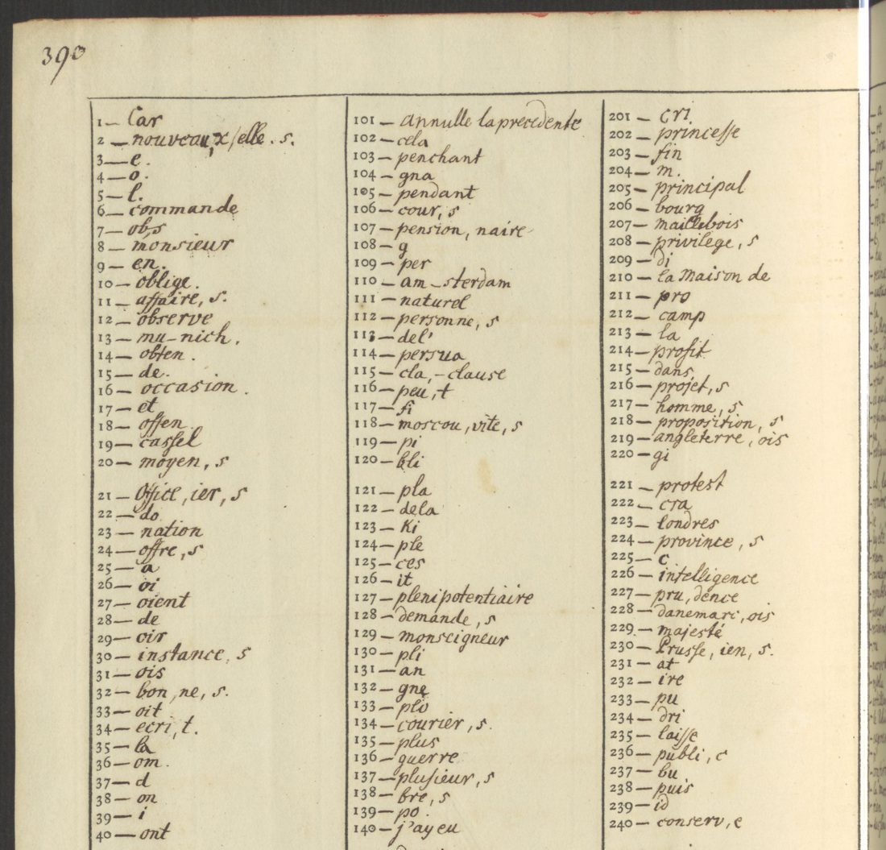
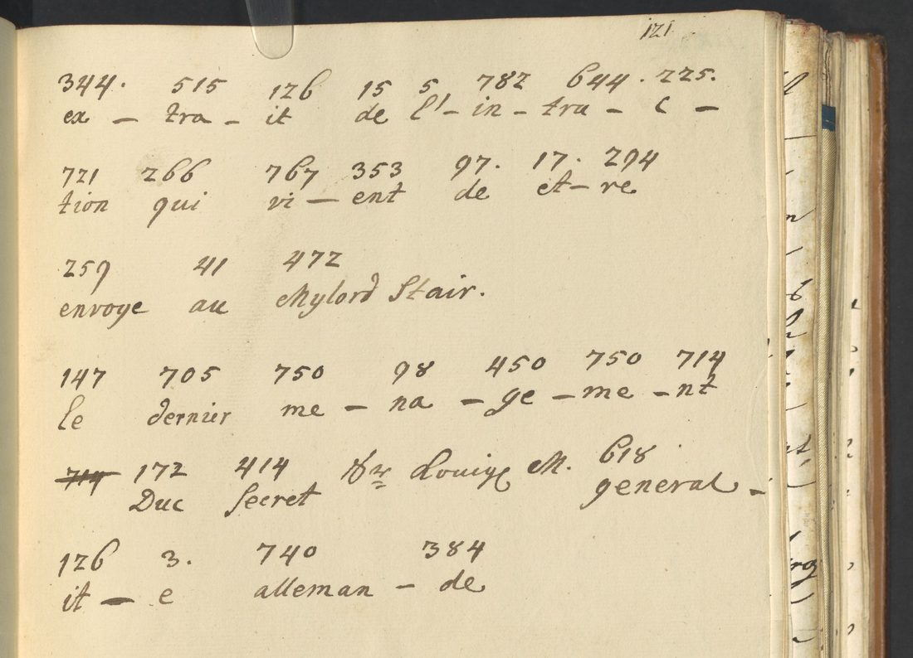

At a glanceRead after matching with key from external sources · 220 of 223 code groups
- The letters
- An unsigned letter dated London, 15/26 February 1743, and Ernst von Steinberg’s letter from London of 29 March / 9 April 1743, both to Lieutenant-General Johann Georg von Ilten with the Hanoverian troops. The letters are in German, with the secret parts in French code.
- Where
- Gottfried Wilhelm Leibniz Bibliothek, Hanover, Ms XXIII 1234:29,2 pp. 73–75 and 119–121, online in the GWLB digital library. Kalliope calls both “teilweise dechiffriert”.
- The cipher
- A syllabic nomenclator of 863 numbered groups, with homophones, officers’ names, and the control groups “annulle la precedente” and “repete la precedente”. Blank numbers are nulls.
- How it was deciphered
- The key table is in another volume of the papers, Ms XXIII 1234:31,1 pp. 386–391 (1745/46). It matches the worksheet the office made for the Steinberg letter, and it reads the unsigned letter, which had no decipherment at all.
- What it says
- The King approves the forage instructions, and the troops are to eat the country bare so that the French find “ni fourage ni rien”. Steinberg encloses an extract of the instructions just sent to Lord Stair.
- Still open
- One group whose last digit is lost in the binding, and a stray letter before and after it.

01 The letters
Johann Georg von Ilten (1688–1749) was a Hanoverian lieutenant-general in the Pragmatic Army, which George II had sent to the Austrian Netherlands. His papers, the Sammlunge von Krieges Commissariat undt Landt-Sachen, are Ms XXIII 1234 in the Ilten collection at the GWLB. Kalliope catalogues two letters in volume 29,2 singly, each as “teilweise dechiffrierter Brief”.
- Unsigned, London, 15/26 February 1743 (pp. 73–75). A German opening says the report of 18 February has arrived and been approved. Twenty-five lines of code follow, 189 groups, and then more German clear text about an affair between Colonel von Hardenberg and a major. Nobody deciphered the code. Kalliope’s “partly deciphered” can only mean the clear parts.
- Ernst von Steinberg, London, 29 March / 9 April 1743 (pp. 119–121). A German letter with three short code runs, 34 groups. Page 121 is the office’s worksheet, with each group glossed syllable by syllable.
02 The key
A Kalliope search for “Chiffre” in the Ilten papers finds volume 31,1 (1745–46), whose record lists “eine Chiffre-Tabelle” at pp. 386–391. The key is two-part:
- pp. 386–388: the enciphering side, in alphabetical order (“a – 25, 61, 244, 301, 467, 720”), with an Additamentum of officers and places, among them Ilten himself as 845.
- pp. 390–391: the deciphering side, numbers 1–863. Its foot note reads “NB. les Chiffres qui restent ne signifient rien”: blanks and everything from 864 to 1000 are nulls. Groups 101 and 783 mean “annulle la precedente” and 453 “repete la precedente”.

The table was transcribed in full, 863 entries. The Steinberg worksheet confirms it: every value the office wrote there, 28 of them, is the table’s value. The worksheet has 17 “et” and 294 “re” for être, 472 “Mylord Stair” and 414 “secret”. The table is dated by its volume to 1745/46, but its names (Sommerfeldt, Du Pontpietin, Stair, the Duc d’Arenberg) are the names of 1743.

03 The reading
The unsigned letter, 15/26 February 1743
Pour ce qui regarde les instructions que Monsieur le general du Pontpietin a donné à Monsieur le Lieutenant general de Sommerfeldt par rapport aux fourages, elles sont aussi approuvées, ainsi que j’ay ordre de le marquer, aussi bien qu’on ne doutoit point du soin qu’on auroit de continuer à tenir toujours une bonne et exacte discipline dans ce pays là. Cependant on souhaite que les trouppes consument avec […] même bonne discipline ce qu’il y a de fourage dans ces quartiers, afin qu’il n’en reste rien si l’envie prenoit aux François de vouloir prendre quartier après vous dans ce pays là, de sorte qu’ils n’y trouveroient point ni fourage ni rien de ce qui seroit necessaire pour la subsistance des trouppes. Vous ferez usage de ce dernier point selon votre prudence ordinaire.
In English: the King approves the forage instructions that General du Pontpietin gave Lieutenant-General Sommerfeldt, and trusts that good discipline will be kept. The troops are nevertheless to consume the forage in their quarters, so that if the French should quarter there after them they find neither forage nor anything else to keep an army. Ilten is to use this last point with his usual prudence. The letter is unsigned, but it writes “j’ay ordre de le marquer” and dates itself from London in the code Steinberg used five weeks later, so it probably came from the German Chancery in London. That is not proven.
Two control groups are used. 453 (“repete la precedente”) follows trouppes, and 101 (“annulle la precedente”) cancels a mistaken 697 empeche at the end.
Steinberg, 29 March / 9 April 1743
Auf Sr. Königl. Mayt. gnädigsten Befehl habe ich nicht nur das heute an den Herrn General du Pontpietin ergehende Königl. Rescriptum… hiebey zu schließen, sondern auch einen extrait de l’instruction qui vient d’être envoyée au Mylord Stair zur Nachricht… mit anzufügen, damit Ew. Hochwollgebohren quoique avec le dernier ménagement du secret bey Sr. Königl. Mayt. généralité allemande Gebrauch davon machen mögen.
With the table, all 34 groups read. The worksheet had skipped 278.613 quoique avec and misread 644.
In both letters the table’s 172 “Duc” stands for du: “le general Du Pontpietin”, “du soin”, “du secret”.
04 What remains open
- Unsigned letter, p. 74, line 3: “consument avec 283.75? même”. The last digit of 75? is inside the binding. 751, a null, fits the visible stroke, but 283 (r) then stands alone. The sense, “avec la même”, is plain.
- The same letter, p. 74, line 4: a single 59 (e) after discipline, probably a slip.
- Volume 29,2 is described as partly in cipher throughout. Only these two letters are catalogued singly, so other coded passages in the 1741–46 volumes would read with the same table.
05 Sources
- GWLB digital library, Ms XXIII 1234:29,2 (METS DE-611-BF-85387, images 81–83 and 127–129), and Ms XXIII 1234:31,1 (METS DE-611-BF-85391, images 410–417), digitale-sammlungen.gwlb.de, public domain.
- Kalliope records DE-611-HS-4136816, DE-611-HS-4136823 and DE-611-BF-85391 (the “Chiffre-Tabelle”).
The transcribed key, the ciphertext, the decoder and the profile are in ilten1743/.